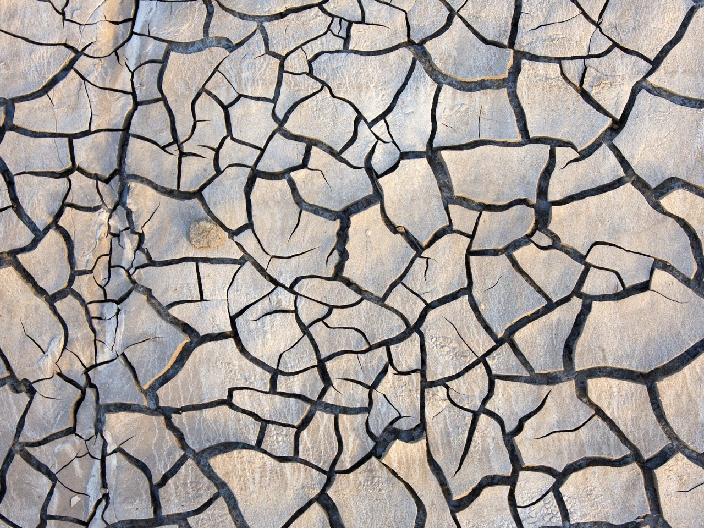
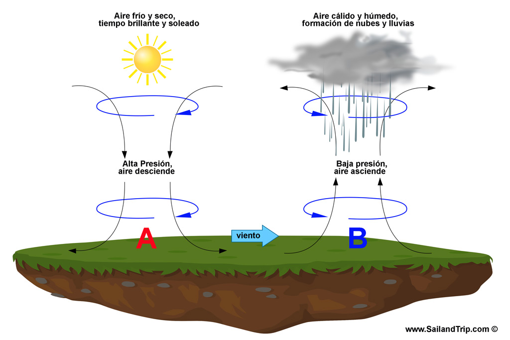

"La naturaleza sostiene la vida universal de todos los seres"
-Tenzin Gyatso, decimocuarto dalái lama, supremo dirigente espiritual y político.
Factores Abioticos
|
Los factores abióticos son todos aquellos que no tienen vida y no necesitan la interacción con otros seres vivos para existir. Al contrario, estos factores son los que permiten que los seres vivos puedan desenvolverse y desarrollarse correctamente. Estos factores pueden ser físicos o químicos, dependiendo de su composición y de su comportamiento. Son vitales para los seres que habitan el planeta, constituyen el espacio necesario en el que los organismos son capaces de subsistir y reproducirse. Los factores abióticos incluyen básicamente 4 grandes elementos: agua, sol, suelo y aire. |
Agua |
Suelo |
|---|---|
|
El agua es un compuesto químico fundamental para todos los seres vivos. Tiene la característica de formar parte de la composición física de la mayoría de los seres y es capaz de disolver gran parte de los elementos que existen en la naturaleza. |
Los suelos están llenos de minerales que permiten la generación de vida. Este factor abiótico es considerado uno de los más importantes debido al alto impacto que tiene sobre todos los organismos vivos del planeta. |
|  | |
Aire |
Sol |
|
Son los encargados de descomponer materia correspondiente a organismos muertos. A través de este proceso de descomposición, los organismos descomponedores generan materia inorgánica, que es aprovechada por los factores bióticos productores. |
La luz solar es la encargada de proveer energía para que los organismos terrestres subsistan. La luz del Sol crea las condiciones adecuadas para que las especies puedan desarrollarse en un hábitat o en otro, y también es fundamental durante el proceso de la fotosíntesis. |

|
|
Factores Físcos |
|
|
Los factores físicos son una subclasificación de los factores abióticos, debido a que son elementos que no poseen vida. Dentro de esta categoría pueden resaltarse tres elementos fundamentales: la temperatura, la presión atmosférica y la lluvia. |
|
Temperatura |
Presion Atmosferica |
|
El nivel de temperatura en un ambiente dado determinará cuáles especies se desarrollarán allí. Hay organismos que necesitan muy altas temperaturas para poder subsistir, mientras que hay otras que sólo pueden desarrollarse óptimamente cuando se encuentran a temperaturas bajo cero. Los cambios de temperatura que ocurren durante todo el año como consecuencia de las distintas estaciones, inciden directamente en los comportamientos de las plantas, en los procesos de hibernación de algunos animales y en los momentos de apareamiento y reproducción de los organismos. |
Este elemento tiene una influencia importante en la cantidad de oxígeno que hay en el agua. Además, el nivel de presión atmosférica que exista en un espacio determinará la ejecución de una serie de procesos internos en los organismos, que se generan para que éstos puedan adaptarse a las condiciones existentes. |
|  | |
Lluvia |
|
|
Las precipitaciones inciden en los seres vivos de distintas formas. Por ejemplo, al caer en los suelos, las lluvias favorecen los procesos de erosión de las rocas, lo que permite la incorporación de minerales en los suelos. |
|

| |
Factores Químicos |
|
|
Al ser elementos no vivos, los factores químicos también son considerados parte de los factores abióticos. En esta oportunidad se destacarán dos de los principales factores químicos: la salinidad del agua y los minerales. |
|
Salinidad del Agua |
Minerales |
|
Las concentraciones de sal de las agua también influyen en los organismos que pueden hallarse en un sitio determinado. Existen seres que funcionan perfectamente bajo niveles altos de sal, como los microbios halófilos; mientras que existen otros que sólo pueden subsistir en escenarios con bajos niveles de salinidad. |
Como se explicó anteriormente, los minerales forman parte primordial de los suelos, debido a que sirven de nutrientes a las plantas. Los minerales también forman parte de la constitución de los seres vivos y cumplen importantes funciones dentro de los organismos, como el fortalecimiento de los huesos y la participación en procesos metabólicos, que son fundamentales para el desarrollo adecuado de los seres. |